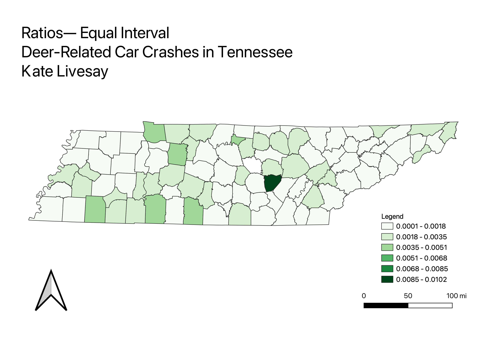
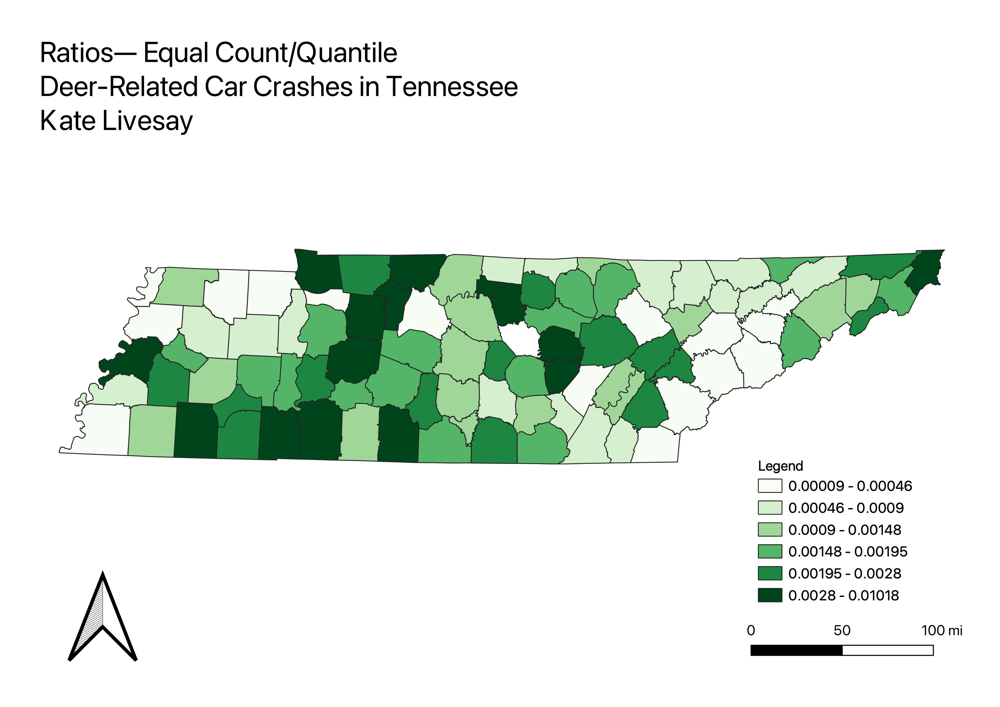

Homework 7: Choropleth and Proportional Symbol Maps
Kate Livesay
Choropleth

Equal Interval

Natural Breaks

Quantile

Link to interactive map!
Interactive Map
Data used for this project
Cleaned CSV dataset
Data source for deer-related crashes
Vector File GeoJSON
Link to TN county geography